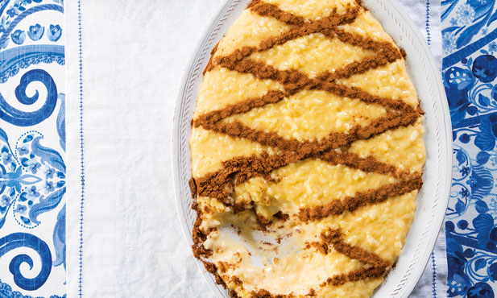

Arroz-doce
Doce das romarias e casamentos por todo o país, com ou sem gemas, mas sempre polvilhado com canela. Uma receita cremosa que sacia as memórias de qualquer um.
| 4 convidados 30m Sobremesa Dificuldade baixa | |
|---|---|
| Ingredientes para Arroz-doce | |
|
|
Passos para fazer Arroz-doce
1 - Leve ao lume um tacho com o leite, o açúcar, o arroz e o sal e quando levantar fervura introduza a casca de limão.
2 - Deixe cozer em lume brando, mexendo de vez em quando, até o arroz estar bem cozido mas ainda caldoso.
3 - Desfaça as gemas com um garfo numa tigela, junte um pouco do arroz cozido, mexa e misture tudo no tacho.
4 - Leve novamente ao lume, agora muito baixo, e mexa cerca de um minuto.
5 - Retire do lume e distribua por taças individuais ou numa travessa funda.
6 - Depois de frio, polvilhe com canela.